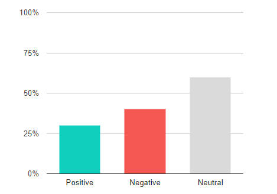

ดีหรือร้าย เราบอกคุณได้
SIGNAL สามารถวิเคราะห์ความรู้สึกจากข้อความภาษาไทย แล้วบอกได้ว่าข้อความนั้นเป็นทางบวกหรือลบได้ด้วย Machine Learning
Positive
Negative
บริการของเรา

Sentiment Analysis
เครื่องมือตรวจสอบความรู้สึกผู้ติดตามแบ่งออกเป็น 3 ส่วน ได้แก่ Positive, Negative และ Neutral จากการใช้ Machine Learning และเทคนิคพิเศษ Multi-Lebel ทำให้ได้ค่าที่แม่นยำและตรงกับความเป็นจริง
Top Keywords
เครื่องมือตรวจสอบคำที่ถูกพูดถึงบ่อย ใช้ในการจับประเด็นความสนใจของลูกค้าได้อย่างง่ายดาย สามารถช่วยลดระยะเวลาในการตรวจสอบเพจด้วยตาเปล่าอย่างมีประสิทธิภาพ
Post Evaluation
เครื่องมือติดตามผลลัพธ์รายโพสท์ สามารถจับประเด็นความสนใจและตรวจสอบความรู้สึกลูกค้าได้อย่างง่ายดาย สามารถนำไปใช้ประเมินประสิทธิภาพ Marketing Campaign ได้อย่างเป็นรูปธรรม
Word Trend
ติดตามแนวโน้มความถี่ของคำที่ต้องการดูตามช่วงเวลา ใช้ในการตรวจดูระดับความสนใจที่มากขึ้นหรือลดลงของลูกค้าได้ต่อประเด็นใด ๆ ได้
SIGNAL ตัวช่วยการตลาดยุคใหม่สำหรับคุณ
เริ่มต้นใช้งาน